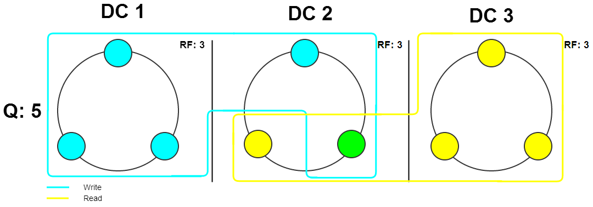
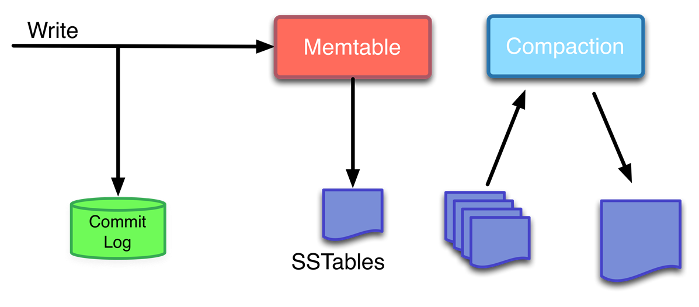

C* Primer - Part 1 of 2
3 Challenges and Cassandra Internals
ING Netherlands (@ingnl)
a little bit about us
Gary Stewart
Christopher Reedijk
- Dev Engineer
- Love/hate relationship with C*
- 14 years of experience in IT
- @ING since: 01-01-2012
- Dev Engineer
- Back-end guy
- 10 years of experience in IT
- @ING since: 01-01-2011


3 Challenges
challenge 1 Improve availability
without trading consistency
availability & consistency
Consequences of not being available


source: nu.nl
availability & consistency
Consequences of not being consistent
challenge 2
Aim to be easier scalable
Changes are happening at an increasing pace
easier scalable
Stop focusing on the
expected load
yesterday
source: bradfrostweb.com
easier scalable
Start focusing on the
unexpected load
today tomorrow source: bradfrostweb.com


challenge 3
Adopt new ways of thinking
Become the top engineering company
new way of thinking
ING's culture is changing fast.
Waterfall to Scrum to DevOps in less than 2 years
new way of thinking
Aim to approach problems as green field
"Un-learn" principles that don't scale
Use cache correctly!
Reduce locking (transaction)
Cassandra Internals
Objectives
Introduction into Apache Cassandra and Datastax
Learn about the drivers
Learn about partitioning, replication factor and consistency levels
Learn about the network topology
Learn about the write and read path
DataStax and Cassandra
Founded in 2010 by Jonathan Ellis and Matt Pfeil
80% Apache Cassandra code contribution
Offer commercial support for DataStax Enterprise version of Cassandra
DataStax Enterprise integrates Search and Analytics
Head Quarter in San Francisco Bay area
EMEA office opened in March 2013

Native Protocol / DataStax Drivers
CQL3 Only
Fully asynchronous protocol, using Netty
Server notifications
Java, C#, Python, node.js and Ruby, ...
Many policies, including:
TokenAwarePolicy, DowngradeConsistencyRetryPolicy, etc...
Metrics (codahale) included
Apache Cassandra
Created by Avinash Lakshman and Prashant Malik at Facebook
Cassandra is
Cassandra is not
- A distributed database
- Highly scalable
- Fault tolerant
- Consistency is tunable
- High throughput
- Network topology aware
- Multi-DC Active-Active
- Written in Java
- A column family
- CQL3
- ACID compliant database
- A relational database
- ANSI SQL compliant
- A document database
Logical Grouping
Keyspace: group of tables
Table: group of data
Replication Factor:
Number of copies of data
Cassandra Replication Strategy
Token Range 0 -> 2127-1 in Ring Formation
Consistent Hashing Algorithm
Default: Murmur3 Partitioner
Replica nodes in clockwise
Gossip protocol between nodes
Replication Factor (RF) = 3
Network Topology Awareness

Tuneable Consistency
Configureable Consistency Level (CL)
per read and write action
Writes
- Any
- One
- Two
- Three
- Local_Quorum
- Quorum
- Each_Quorum
- All
Reads
- One
- Two
- Three
- Local_Quorum
- Quorum
- Each_Quorum
- All
Strong Consistency

CAP – Consistency, Availability, Partition Tolerance
Consistency is achieved with W + R > RF
Quorum = (Integer) RF / 2 + 1
Write Path

Read Path

Summary
- Cassandra is a masterless NoSQL storage engine
- Cassandra's consistency is tuneable per query
- Replication factor is defined per keyspace
- Partitioning is used to determine which node contains the data
- Write path writes to both commitlog and Memtables
- The commitlog is an append-only log, replayed to restore a downed node's Memtables
- Read path is designed to limit i/o as much as possible
- SStables are immutable
Thank you
...see Part 2 of 2: Modelling Basics and 3 Facts
Contact
christopher.reedijk@ing.nl
@creedijk
gary.stewart@ing.nl
@Gaz_GandA

this presentation is created using:
reveal.js